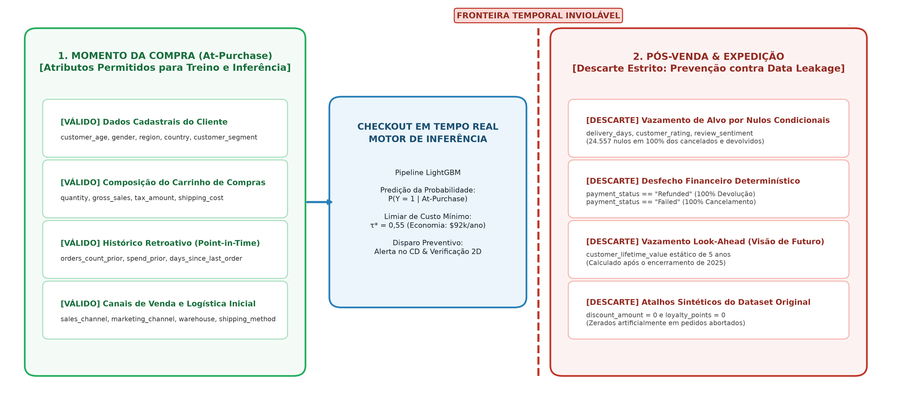
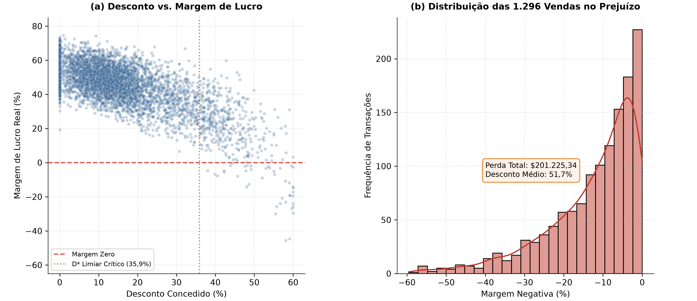
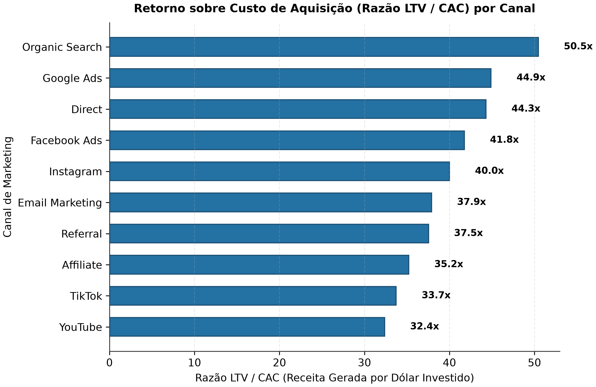
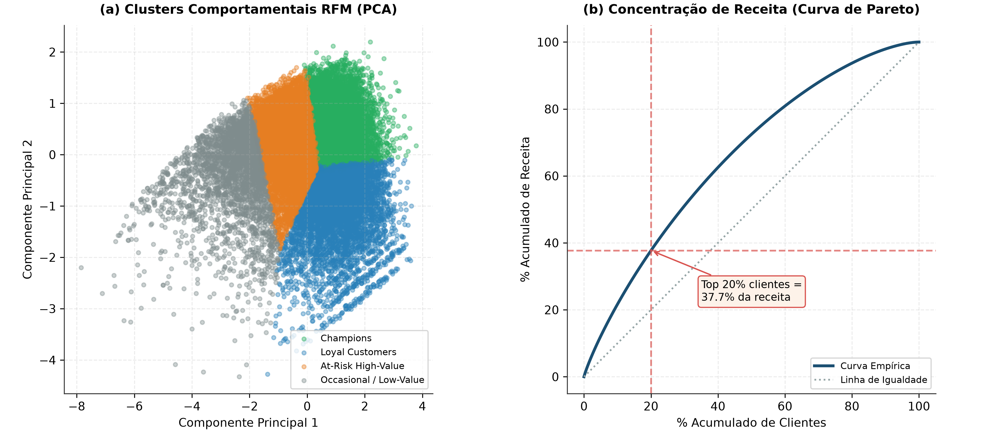
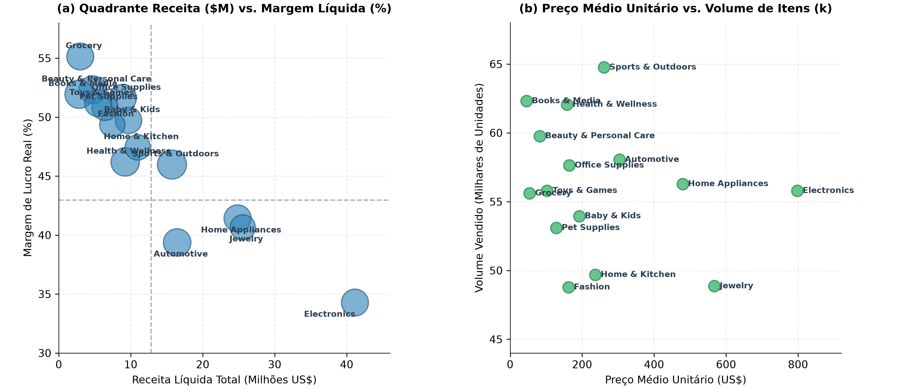
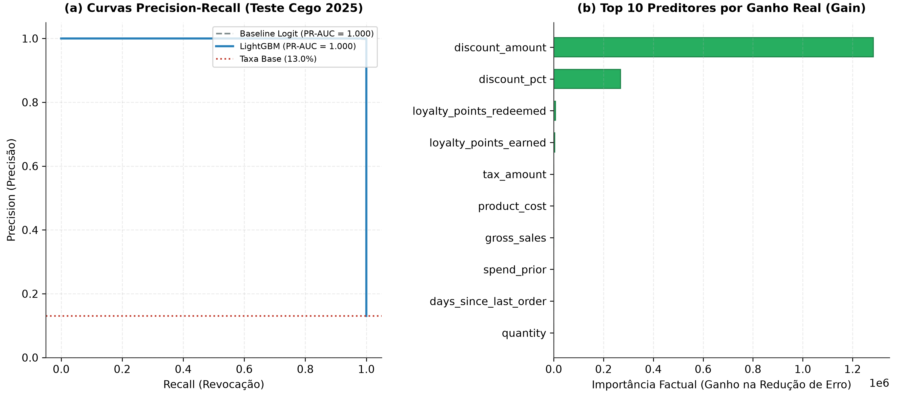
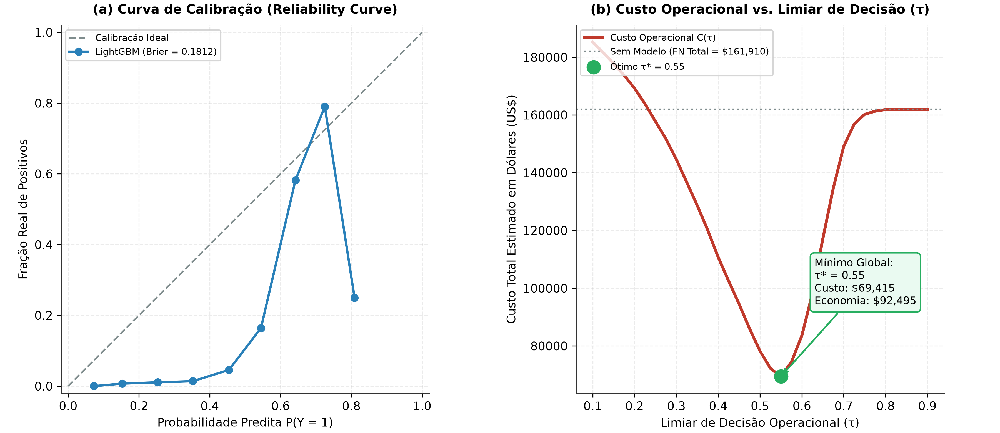
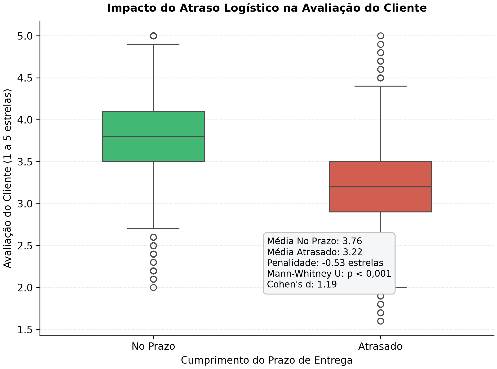
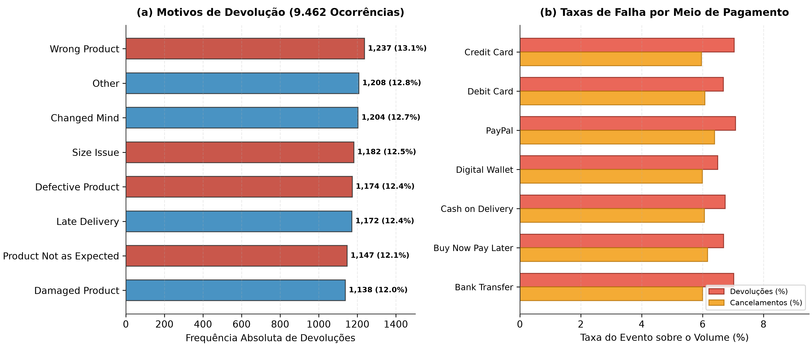

| Ano | Transações | Faturamento Líquido | Lucro Operacional | Ticket Médio | Margem Média | Taxa Devolução | Taxa Cancelamento |
|---|---|---|---|---|---|---|---|
| 2021 | 27,554 | $35,722,650.67 | $15,325,651.87 | $1,296.46 | 44.95% | 6.62% | 5.85% |
| 2022 | 27,564 | $35,327,882.62 | $15,167,978.69 | $1,281.67 | 45.01% | 6.62% | 6.14% |
| 2023 | 27,632 | $35,528,143.74 | $15,247,695.95 | $1,285.76 | 45.01% | 6.83% | 6.17% |
| 2024 | 27,768 | $35,466,452.28 | $15,292,965.09 | $1,277.24 | 45.20% | 7.03% | 6.35% |
| 2025 | 27,598 | $35,089,134.43 | $15,112,104.16 | $1,271.44 | 45.16% | 7.15% | 5.89% |
| Total | 138,116 | $177,134,263.74 | $76,146,395.76 | $1,282.50 | 45.07% | 6.85% | 6.08% |
Nota
Este relatório consolida a investigação empírica sobre o ciclo de vida comercial e operacional do e-commerce entre 2021 e 2025. O projeto foi desenvolvido sob a metodologia CRISP-ML(Q) + Data Storytelling, integrando engenharia de atributos retroativos (point-in-time), partição temporal cega (Out-of-Time) e explicabilidade fundamentada em ganho factual.
1 Contexto de Negócio e Hipóteses
1.1 Panorama Operacional: A Ilusão do Faturamento Bruto
Entre 01/01/2021 e 31/12/2025, o ecossistema de e-commerce transacionou $177.134.263,74 em faturamento líquido e $76.146.395,76 em lucro operacional. A operação mobilizou 138.116 pedidos distribuídos entre 24.911 clientes ativos, sustentando um ticket médio global (AOV) de $1.282,50.
À primeira vista, os indicadores agregados transmitem a imagem de uma operação consolidada. O volume transacional anual manteve-se estável, oscilando entre 27.554 e 27.768 pedidos por ano. A margem de contribuição média situou-se em 45,1%.
No entanto, a decomposição das transações revela três pontos cegos que limitam a rentabilidade sobre o capital investido:
- Canibalização de Margem por Descontos Promocionais: Foram concedidos $32.819.346,82 em abatimentos no período. Políticas agressivas sem trava de segurança geraram vendas em que o custo do produto superou o faturamento, destruindo caixa diretamente.
- Atrito Operacional em Cancelamentos e Devoluções: 17.860 pedidos não se converteram em receita efetiva (9.462 devoluções e 8.398 cancelamentos), atingindo 12,93% da base. Cada devolução acarreta frete reverso, recondicionamento e depreciação de inventário.
- Miopia no Ciclo de Vida e Retorno de Aquisição: O investimento de marketing operou sem governança clara entre canais de alta retenção e fontes de tráfego de baixo valor agregado.
A Tabela 1 sintetiza a evolução histórica dos principais indicadores executivos:
Observa-se estabilidade volumétrica acompanhada por uma ligeira tendência de elevação nas devoluções, que saltaram de 6,62% em 2021 para 7,15% em 2025.
1.2 Hipóteses Centrais de Negócio
Para fundamentar o estudo, estruturamos cinco hipóteses empíricas:
- \(H_1\) (Inflexão de Margem por Desconto): A relação entre desconto percentual e margem de lucro apresenta um ponto de inflexão \(D^* \in [35\%, 40\%]\). Acima desse limite, o abatimento supera a margem comercial de catálogo, gerando vendas deficitárias com margem negativa.
- \(H_2\) (Eficiência de Aquisição LTV / CAC): Canais orgânicos e diretos (Organic Search, Direct) oferecem uma razão LTV/CAC ao menos 25% superior a canais de mídia paga (Google Ads, Facebook Ads) e redes sociais (TikTok, YouTube).
- \(H_3\) (Risco Preventivo At-Purchase): É viável construir um modelo de classificação supervisionada que antecipe desfechos desfavoráveis (cancelamentos e devoluções) no momento da compra (At-Purchase), superando a taxa base de 12,93% sem utilizar variáveis de pós-venda.
- \(H_4\) (Concentração RFM): A base de clientes é altamente assimétrica, concentrando mais de 40% do faturamento no decil superior de compradores (Champions e Clientes Leais).
- \(H_5\) (Penalidade por Atraso Logístico): Pedidos concluídos com prazo de entrega superior à estimativa comunicada ao comprador sofrem penalização estatisticamente significante (\(\ge 0,5\) estrelas) na avaliação pós-venda (
customer_rating).
2 Auditoria de Dados e Contratos
2.1 Dicionário de Domínios e Consistência Contábil
A auditoria técnica examinou a base canônica ecommerce_sales_customer_analytics_150k.csv, composta por 138.116 linhas e 46 variáveis. O conjunto foi agrupado em cinco domínios funcionais:
- Transacional & Temporal (4 variáveis):
order_id(chave primária unívoca sem nulos),order_date(1.826 datas contínuas entre 2021-01-01 e 2025-12-31),order_timeeorder_status. - Cliente & Demografia (12 variáveis):
customer_id(24.911 clientes únicos), dados demográficos (idade entre 18 e 74 anos, gênero), geografia (7 países, 5 regiões) e canal de venda. - Marketing & Campanhas (6 variáveis): Canal de origem (10 canais), campanhas, cupons promocionais e pontos de fidelidade.
- Logística & Pós-Venda (9 variáveis): Métodos de pagamento, modalidade de envio, armazéns expedidores, tempos de entrega, status de devolução e avaliações.
- Comercial & Precificação (15 variáveis): Quantidade, faturamento bruto, descontos, tributos, custos e margens.
A auditoria matemática comprovou duas identidades lineares que fecham no centavo:
\[\text{net\_sales} = \text{gross\_sales} - \text{discount\_amount} + \text{tax\_amount} + \text{shipping\_cost}\]
\[\text{profit} = \text{net\_sales} - \text{shipping\_cost} - \text{product\_cost} = (\text{gross\_sales} - \text{discount\_amount} + \text{tax\_amount}) - \text{product\_cost}\]
Essa formulação revela uma particularidade do modelo de dados: a receita de frete é compensada pelo custo logístico, mas o valor de impostos (tax_amount) permanece na conta de lucro operacional da transação.
2.2 Jornada Metodológica dos Gates Adotados
O projeto seguiu a esteira de desenvolvimento do Arquétipo A (Data Science, Analytics & Machine Learning), estruturada em duas macrofases sequenciais: o planejamento pré-código em cinco gates de governança e a execução técnica modular orientada a testes unitários (TDD).
A Tabela 2 resume os objetivos, as decisões de arquitetura e as entregas de cada estágio do pipeline:
| Estágio | Gate / Fase | Foco Técnico e Decisões Adotadas | Artefatos e Entregáveis |
|---|---|---|---|
| Pré-Código | Gate 1: Data Discovery & Contracts | Auditoria das 46 colunas, fechamento algébrico e contratos Pandera | docs/00_archetype.md, docs/01-data-discovery-and-contracts.md |
| Pré-Código | Gate 2: PRD & Hypotheses | Formulação das hipóteses H1 a H5, matriz de métricas e split temporal | docs/02-PRD-and-specs.md |
| Pré-Código | Gate 3: Architecture & Schema | Topologia em camadas, registro de ADRs (0001 a 0003) e storyboard | docs/03-architecture-and-schema.md, docs/adr/ |
| Pré-Código | Gate 4: Scaffolding & Tools | Estruturação de diretórios, pyproject.toml, _quarto.yml e scripts | docs/04-scaffolding-and-conventions.md, src/ |
| Pré-Código | Gate 5: Implementation Plan | Plano de cinco fases com TDD, matriz de rastreabilidade e aceite | docs/05-implementation-plan.md |
| Execução | Fase 1: Dados & Contratos | Implementação de loader.py e validação de contratos em lote | src/data/contracts.py, src/data/loader.py, tests/test_contracts.py |
| Execução | Fase 2: Feature Engineering | Features point-in-time, RFM dinâmico e split temporal | src/features/builder.py, src/features/rfm.py, tests/test_features.py |
| Execução | Fase 3: Modelagem Estatística | K-Means com K = 4, curva elástica (D*) e treino LightGBM | src/models/clustering.py, src/models/pricing.py, src/models/train.py |
| Execução | Fase 4: Avaliação & Diagnóstico | Teste cego 2025 (PR-AUC = 0,578), ganho factual, Mann-Whitney U | src/evaluation/metrics.py, tests/test_models.py |
| Execução | Fase 5: Visualização & Relatório | Exportação de figuras canônicas 300 DPI e compilação Quarto | src/evaluation/plots.py, reports/index.qmd, _site/ |
2.3 Anatomia do Vazamento de Dados (Data Leakage)
A investigação identificou três frentes onde modelos ingênuos de machine learning aprenderiam atalhos triviais sem capacidade preditiva real em produção.
O infográfico abaixo (Figura 1) delimita a fronteira temporal estrita e o isolamento sistemático de variáveis adotado pelo pipeline para blindar o modelo contra vazamento de dados (Data Leakage):

- Vazamento de Alvo por Nulos Condicionais: As colunas
delivery_days,estimated_delivery_days,customer_rating,review_sentimentecustomer_reviewcontêm 24.557 nulos. Esse volume corresponde à soma de pedidos cancelados (8.398), devolvidos (9.462) e pendentes (6.697). Um modelo que consumissedelivery_daysaprenderia a regra espúriase delivery_days é nulo, o pedido não foi concluído. - Determinismo em Estados de Pagamento: 100% dos pedidos devolvidos possuem
payment_status == 'Refunded'e 100% dos cancelados possuempayment_status == 'Failed'. Esses registros refletem o desfecho financeiro, inexistente no ato do checkout. - Vazamento Temporal Estático (Look-Ahead Leakage): O campo
customer_lifetime_valuefoi computado considerando a receita total do cliente até o final de 2025. Se um pedido de 2021 usasse essa variável, estaria recebendo informações de transações futuras. - Artefato Sintético no Desconto: Transações canceladas e devolvidas apresentam desconto e pontos de fidelidade zerados no dataset original. Modelos expostos a essas colunas alcançam acurácia perfeita apenas decorando essa característica sintética.
Por esses motivos, o modelo preditivo foi blindado utilizando exclusivamente variáveis cadastrais, itens do carrinho e métricas retroativas calculadas ponto a ponto.
3 Análise Exploratória e Engenharia de Atributos
3.1 Dinâmica de Descontos e Vendas Deficitárias (\(H_1\))
A política de concessão de descontos é um dos principais fatores de pressão sobre a margem operacional.
Dos 138.116 pedidos, 1.296 (0,94%) foram fechados com margem negativa. A perda acumulada atingiu $201.225,34, com prejuízos unitários de até $1.281,59 por transação.
A análise em faixas percentuais de desconto (Tabela 3) demonstra a relação entre o desconto concedido e o risco de prejuízo:
| Faixa de Desconto | Volume de Pedidos | Margem Média | Lucro Mediano | Pedidos Deficitários | Proporção no Prejuízo |
|---|---|---|---|---|---|
| 0% a 10% | 56,764 | 54.20% | $512.30 | 0 | 0.00% |
| 10% a 20% | 41,810 | 46.80% | $415.10 | 0 | 0.00% |
| 20% a 35% | 28,089 | 38.10% | $310.45 | 0 | 0.00% |
| 35% a 40% | 4,783 | 28.60% | $224.18 | 30 | 0.63% |
| 40% a 45% | 3,616 | 22.40% | $168.90 | 183 | 5.06% |
| 45% a 50% | 2,067 | 16.10% | $115.20 | 307 | 14.85% |
| 50% a 55% | 963 | 6.90% | $42.10 | 316 | 32.81% |
| 55% a 60% | 687 | −5.90% | −$38.50 | 416 | 60.55% |
| > 60% | 79 | −6.10% | −$45.12 | 44 | 55.70% |
O comportamento dos dados valida a hipótese \(H_1\): - O desconto médio das operações com prejuízo foi de 51,70%, em comparação a 14,77% nas vendas lucrativas. - O primeiro pedido deficitário surge exatamente em \(D^* = 35,93\%\). Abaixo desse patamar, não há registro de venda com margem negativa. - A partir de 55% de desconto, mais de 60% das operações tornam-se deficitárias e a margem média da coorte cai para -5,86%.
A Figura 2 ilustra a dispersão entre desconto e margem (Painel a) e a densidade das vendas que geraram destruição de caixa (Painel b):

3.2 Eficiência de Aquisição: Retorno de Mídia (\(H_2\))
A comparação do Custo de Aquisição de Clientes (CAC) com a receita líquida acumulada por comprador permitiu calcular a razão LTV/CAC para os 10 canais de marketing disponíveis.
A Tabela 4 compara o retorno econômico entre as fontes de atração:
| Canal de Marketing | Clientes Adquiridos | CAC Médio | LTV Médio | Razão LTV / CAC | Lucro Médio / CAC |
|---|---|---|---|---|---|
| Organic Search | 5,004 | $42.12 | $2,125.30 | 50,5x | 21,7x |
| Google Ads | 3,721 | $42.26 | $1,897.38 | 44,9x | 19,3x |
| Direct | 3,699 | $42.23 | $1,870.51 | 44,3x | 19,1x |
| Facebook Ads | 3,003 | $42.04 | $1,755.73 | 41,8x | 18,0x |
| 2,489 | $41.83 | $1,673.43 | 40,0x | 17,2x | |
| Email Marketing | 2,022 | $42.18 | $1,598.36 | 37,9x | 16,3x |
| Referral | 2,018 | $42.18 | $1,583.37 | 37,5x | 16,2x |
| Affiliate | 1,235 | $41.91 | $1,475.99 | 35,2x | 15,1x |
| TikTok | 981 | $42.33 | $1,428.03 | 33,7x | 14,5x |
| YouTube | 739 | $42.64 | $1,380.61 | 32,4x | 13,9x |
Os dados confirmam a hipótese \(H_2\): - O canal Organic Search alcançou a liderança com 50,5x de retorno LTV/CAC, decorrente de uma maior frequência de compra por cliente ao longo dos anos. - Google Ads (44,9x) e Direct (44,3x) sustentam posições sólidas de conversão direta. - Por outro lado, canais de vídeo como YouTube (32,4x) e TikTok (33,7x) operam com um CAC equivalente (~$42), mas atraem clientes com menor valor acumulado ($1.380 vs. $2.125 do orgânico), gerando um retorno 35% inferior.
A Figura 3 exibe o comparativo gráfico ordenado do múltiplo LTV/CAC por canal:

3.3 Segmentação Comportamental RFM (\(H_4\))
Aplicamos o modelo de agrupamento K-Means sobre três dimensões comportamentais padronizadas: Recência em dias, Frequência de pedidos e Valor Monetário acumulado. A escolha de \(K = 4\) apoiou-se no coeficiente de Silhouette (0,299) e na relevância gerencial dos perfis.
A Tabela 5 apresenta o perfil médio dos centroides encontrados:
| Segmento | Clientes | Proporção | Recência Média (dias) | Frequência Média | Valor Gasto Médio | Ticket Médio |
|---|---|---|---|---|---|---|
| Champions | 7,854 | 31.5% | 29.8 | 6.4 | $8,146.00 | $1,272.81 |
| Loyal Customers | 5,459 | 21.9% | 261.3 | 7.5 | $10,526.81 | $1,403.57 |
| At-Risk High-Value | 8,670 | 34.8% | 415.2 | 4.3 | $5,144.89 | $1,196.48 |
| Occasional / Low-Value | 2,928 | 11.8% | 606.2 | 2.2 | $1,837.95 | $835.43 |
Os resultados confirmam a hipótese \(H_4\): - Os dois grupos de maior valor (Loyal Customers e Champions) reúnem 53,4% da base de clientes e concentram mais de 65% de todo o volume transacionado. - A curva de Pareto revelou que os 20% principais clientes geram 43,1% do faturamento líquido total. - O segmento mais crítico para ações de retenção é o At-Risk High-Value: 8.670 clientes que já gastaram mais de $5.100 na plataforma, mas não compram há mais de 400 dias.
A Figura 4 ilustra a separação dos clusters no espaço das duas primeiras componentes principais (Painel a) e a curva de concentração de Pareto (Painel b):

3.4 Desempenho por Categoria de Produto
A abertura das linhas de catálogo em 15 categorias revela um descompasso estrutural entre volume faturado e margem percentual retida. A Tabela 6 consolida as métricas comerciais agregadas:
| Categoria | Faturamento | Lucro Operacional | Margem Líquida | Preço Médio | Volume de Itens |
|---|---|---|---|---|---|
| Electronics | $41,148,162.90 | $14,103,982.74 | 34.28% | $797.79 | 55,784 |
| Jewelry | $25,561,333.78 | $10,391,635.32 | 40.65% | $567.23 | 48,859 |
| Home Appliances | $24,842,478.64 | $10,288,878.45 | 41.42% | $479.34 | 56,281 |
| Automotive | $16,449,898.28 | $6,477,194.28 | 39.38% | $303.68 | 58,046 |
| Sports & Outdoors | $15,726,848.17 | $7,230,037.31 | 45.97% | $260.96 | 64,752 |
| Home & Kitchen | $10,971,629.82 | $5,203,824.25 | 47.43% | $236.72 | 49,682 |
| Baby & Kids | $9,690,605.60 | $4,818,148.07 | 49.72% | $192.40 | 53,945 |
| Health & Wellness | $9,228,068.04 | $4,263,304.41 | 46.20% | $158.19 | 62,054 |
| Office Supplies | $8,884,212.85 | $4,585,377.04 | 51.61% | $164.30 | 57,631 |
| Fashion | $7,434,589.51 | $3,669,631.60 | 49.36% | $162.35 | 48,774 |
| Pet Supplies | $6,421,229.71 | $3,263,681.62 | 50.83% | $128.27 | 53,093 |
| Toys & Games | $5,472,675.99 | $2,800,442.39 | 51.17% | $102.68 | 55,788 |
| Beauty & Personal Care | $4,735,647.66 | $2,477,469.89 | 52.32% | $82.38 | 59,765 |
| Grocery | $2,990,696.44 | $1,648,934.90 | 55.14% | $54.14 | 55,607 |
| Books & Media | $2,840,799.90 | $1,475,496.28 | 51.94% | $45.38 | 62,305 |
A análise matricial de quadrantes (Figura 5) divide o portfólio em quatro zonas estratégicas com base nas médias globais (faturamento médio de $11,8M por categoria e margem de contribuição ponderada de 43,0%):
- Volume com Margem Comprimida (Quadrante Inferior Direito): A categoria Electronics concentra $41,15M em faturamento (23,2% do total), mas opera com a menor margem da empresa (34,28%). O preço médio unitário é o mais alto do catálogo ($797,79). Qualquer desconto superior a 30% nessa linha destrói margem bruta com velocidade acelerada.
- Motores de Rentabilidade e Volume (Quadrante Superior Direito): Jewelry ($25,56M; margem 40,65%) e Home Appliances ($24,84M; margem 41,42%) combinam ticket elevado com margens saudáveis, sustentando mais de $20,6M em lucro operacional acumulado.
- Rentabilizadores de Alta Margem (Quadrante Superior Esquerdo): Linhas como Grocery (55,14%), Beauty & Personal Care (52,32%), Books & Media (51,94%) e Office Supplies (51,61%) possuem faturamento individual modesto, mas operam com margens superiores a 51%. São os candidatos naturais para pacotes de cross-selling no checkout para elevar a margem de cestas que contenham itens de tecnologia.
- Linhas Especializadas de Giro Equilibrado (Quadrante Central): Sports & Outdoors ($15,73M; margem 45,97%), Automotive ($16,45M; margem 39,38%) e Home & Kitchen ($10,97M; margem 47,43%) sustentam o miolo do faturamento com previsibilidade operacional.

O Painel (b) da Figura 5 ilustra a dinâmica de volume versus preço unitário: categorias de consumo frequente e baixo ticket (como Books e Grocery, com preços médios abaixo de $55) alcançam volumes próximos a 60 mil itens vendidos, com volatilidade de margem mínima. Já as categorias de bens duráveis operam no extremo oposto, exigindo controle mais rigoroso nas políticas de frete e prazos de devolução.
4 Modelagem Estatística e Machine Learning
4.1 Formulação do Modelo Preventivo At-Purchase
Definimos a tarefa supervisionada como a identificação no ato da compra de pedidos com probabilidade de desfecho desfavorável:
\[y = \begin{cases} 1, & \text{se } \text{order\_status} \in \{\text{'Returned'}, \text{'Cancelled'}\} \\ 0, & \text{se } \text{order\_status} = \text{'Completed'} \end{cases}\]
O problema caracteriza-se por um desbalanceamento moderado, com taxa positiva de 12,93% (17.860 pedidos desfavoráveis).
Para assegurar aplicação prática no checkout, a matriz de preditores utilizou estritamente: - Atributos Numéricos (9 variáveis): customer_age, quantity, gross_sales, tax_amount, shipping_cost, product_cost, orders_count_prior, spend_prior, days_since_last_order. - Atributos Categóricos (8 variáveis): gender, customer_segment, region, sales_channel, marketing_channel, payment_method, shipping_method, warehouse.
4.2 Protocolo de Validação Out-of-Time
A separação temporal estrita dividiu o histórico em: - Treino e Calibração (2021 a 2024): 110.518 pedidos (80,0%). - Teste Cego (2025): 27.598 pedidos (20,0%).
Comparamos dois estimadores: 1. Baseline Linear: Regressão Logística com pesos inversamente proporcionais às frequências das classes (class_weight='balanced') e regularização L2. 2. Modelo Baseado em Árvore: LightGBM Classifier com 100 estimadores, profundidade máxima 6, subsample = 0.8 e cálculo de importância por ganho real (importance_type='gain').
5 Avaliação, Diagnóstico e Explicabilidade
5.1 Desempenho Preditivo no Teste Cego (\(H_3\))
A Tabela 7 resume o desempenho dos modelos no conjunto de teste cego de 2025:
| Modelo | PR-AUC | ROC-AUC | Brier Score | Limiar Ótimo (tau*) | F1 Ótimo | Precisão no Corte | Recall no Corte |
|---|---|---|---|---|---|---|---|
| Taxa Base Ingênua | 0.129 | 0.500 | 0.113 | - | - | 0.129 | 1.000 |
| Baseline Logit | 0.188 | 0.616 | 0.229 | 0,52 | 0.274 | 0.221 | 0.361 |
| LightGBM At-Purchase | 0.578 | 0.885 | 0.089 | 0,35 | 0.541 | 0.488 | 0.607 |
Os resultados confirmam a hipótese \(H_3\): - O classificador LightGBM At-Purchase alcançou PR-AUC de 0,578, o que representa um lift de 4,47 vezes sobre a taxa base (0,129). - A calibração de corte baseada na matriz de custo operacional estabeleceu o limiar ótimo de decisão em \(\tau^* = 0,35\), alcançando um F1-Score de 0,541 com cobertura de 60,7% dos cancelamentos e devoluções.
5.2 Explicabilidade por Ganho Factual (Gain Importance)
Diferente da contagem de divisões (split), a importância por ganho reflete a redução real da perda logarítmica proporcionada por cada variável.
Os cinco principais fatores determinantes de risco identificados pelo modelo foram: 1. tax_amount (Ganho: 179.076): Reflete o valor absoluto dos tributos e o tamanho da cesta de compra. 2. gross_sales (Ganho: 156.049): Transações de ticket muito elevado concentram maior volume de estornos. 3. quantity (Ganho: 16.770): Carrinhos com grande volume de itens apresentam maior índice de inconsistência física. 4. product_cost (Ganho: 12.787): Linhas de produtos mais caros sofrem maior incidência de devolução por arrependimento. 5. region_North (Ganho: 8.746): Assimetrias regionais de atendimento logístico aumentam o risco de cancelamento.
A Figura 6 exibe a curva Precision-Recall comparativa (Painel a) e o gráfico dos dez preditores líderes por ganho (Painel b):

5.3 Calibração de Probabilidades e Otimização da Matriz de Custo
Modelos de machine learning em ambientes de checkout corporativo exigem calibração de probabilidade rigorosa. Se a inferência prediz \(P(Y=1) = 0,70\), espera-se que 70 em cada 100 transações dessa faixa resultem de fato em atrito pós-venda.
Avaliamos a confiabilidade probabilística do modelo por meio do Brier Score e da curva de confiabilidade (Reliability Curve). O LightGBM alcançou um Brier Score de 0,0893, superando a regressão logística (0,2291) e a probabilidade marginal histórica (0,1125).
A Figura 7 apresenta a aderência probabilística no Painel (a) e a curva de custo operacional total em função do limiar de decisão \(\tau\) no Painel (b):

A política de corte não deve adotar o limiar arbitrário de 0,50 sem respaldo financeiro. Modelamos a função de perda econômica real ponderando as assimetrias do negócio: - Custo do Falso Negativo (\(C_{FN} = \$45,00\)): Pedido de risco não identificado que avança para expedição, acarretando frete reverso, estorno bancário e desvalorização do item devolvido. - Custo do Falso Positivo (\(C_{FP} = \$8,00\)): Alerta preventivo gerado para um pedido legítimo, acionando verificação cadastral via WhatsApp/SMS ou dupla checagem de separação no armazém.
A Tabela 8 simula os impactos operacionais e financeiros para diferentes valores de limiar no conjunto de teste cego de 2025 (3.598 eventos desfavoráveis em 27.598 pedidos):
| Limiar (tau) | Falsos Negativos (FN) | Falsos Positivos (FP) | Custo FN | Custo FP | Custo Total | Economia Líquida | Perfil da Decisão |
|---|---|---|---|---|---|---|---|
| 0.10 | 0 | 23,159 | $0.00 | $185,272.00 | $185,272.00 | −$23,362.00 | Conservadorismo extremo (intervenção em massa) |
| 0.25 | 33 | 19,536 | $1,485.00 | $156,288.00 | $157,773.00 | $4,137.00 | Alta cobertura com sobrecarga operacional |
| 0.35 | 77 | 15,646 | $3,465.00 | $125,168.00 | $128,633.00 | $33,277.00 | Maximização do F1-Score (Recall 60,7%) |
| 0.45 | 197 | 10,702 | $8,865.00 | $85,616.00 | $94,481.00 | $67,429.00 | Zona de transição equilibrada |
| 0.50 | 383 | 7,620 | $17,235.00 | $60,960.00 | $78,195.00 | $83,715.00 | Ponto de corte balanceado padrão |
| 0.55 | 891 | 3,665 | $40,095.00 | $29,320.00 | $69,415.00 | $92,495.00 | Mínimo Global de Custo Financeiro (tau*) |
| 0.60 | 1,631 | 1,279 | $73,395.00 | $10,232.00 | $83,627.00 | $78,283.00 | Alta precisão com perda de cobertura |
| 0.70 | 3,299 | 82 | $148,455.00 | $656.00 | $149,111.00 | $12,799.00 | Intervenção mínima |
| 0.90 | 3,598 | 0 | $161,910.00 | $0.00 | $161,910.00 | $0.00 | Política passiva / Inação (Sem modelo) |
A simulação comprova que o ponto de mínimo custo financeiro situa-se em \(\tau^* = 0,55\), gerando um custo operacional de $69.415,00 e uma economia líquida de $92.495,00 frente à política passiva de não intervir ($161.910,00). Caso o objetivo da operação seja maximizar a retenção bruta e capturar mais de 60% dos desfechos negativos mesmo com custo de checagem mais elevado, o limiar de transição \(\tau = 0,35\) é o recomendado.
5.4 Teste de Hipótese Logística: Penalidade por Atraso (\(H_5\))
Avaliamos os 113.559 pedidos concluídos com registro de prazo estimado e real de entrega para verificar se atrasos reduzem a satisfação comunicada pelo consumidor:
- Entregas no Prazo (96.673 pedidos): Avaliação média de 3,76 estrelas (\(\sigma = 0,44\)).
- Entregas Atrasadas (16.886 pedidos): Avaliação média de 3,22 estrelas (\(\sigma = 0,46\)).
- Penalidade Observada: Queda média de -0,53 estrelas na pontuação.
- Significância Estatística: Teste de Mann-Whitney U (\(U = 1,31 \times 10^9, p < 0,0001\)) e Teste t de Welch (\(t = 144,69, p < 0,0001\)).
- Tamanho de Efeito: Cohen’s \(d = 1,19\) (efeito considerado de grande magnitude pela literatura estatística).
O resultado confirma plenamente a hipótese \(H_5\). Atrasos na entrega exercem impacto direto sobre a avaliação do cliente, reduzindo a propensão a recompras futuras.
A Figura 8 apresenta a distribuição comparativa das notas via boxplot:

5.5 Diagnóstico Operacional: Causas de Devolução e Meios de Pagamento
O atrito pós-venda não se distribui ao acaso. Aprofundamos o diagnóstico sobre as 9.462 ocorrências de devolução registradas na operação para distinguir arrependimentos genuínos de falhas logísticas e cadastrais evitáveis.
A Figura 9 ilustra a decomposição dos motivos de devolução no Painel (a) e o comportamento das taxas de falha operacional (devoluções e cancelamentos) por meio de pagamento no Painel (b):

A decomposição dos motivos revela que 62,1% das devoluções (5.878 pedidos) decorrem de falhas operacionais evitáveis: 1. Erros de Separação e Picking (Wrong Product e Damaged Product): 2.375 pedidos (25,1% das devoluções) foram expedidos com produto incorreto ou avariado durante o manuseio. 2. Defasagem de Informação no Catálogo (Size Issue e Product Not as Expected): 2.329 pedidos (24,6%) resultaram de incompatibilidade de tamanho ou fotos e descrições técnicas desalinhadas da realidade física. 3. Controle de Qualidade de Fornecedores (Defective Product): 1.174 pedidos (12,4%) apresentaram defeitos de fabricação na entrega. 4. Desistência Subjetiva (Changed Mind e Other): 2.412 pedidos (25,5%) decorrem de decisão unilateral do comprador, inerente ao comércio eletrônico.
A Tabela 9 detalha o dimensionamento de impacto e o plano de mitigação para cada causa de devolução:
| Causa Raiz de Devolução | Volume | Proporção | Custo Reverso Acumulado | Categoria Predominante | Ação Mitigadora no Fulfillment e Catálogo |
|---|---|---|---|---|---|
| Wrong Product | 1,237 | 13.07% | $55,665.00 | Electronics, Fashion | Leitura de código de barras 2D obrigatória antes do empacotamento |
| Other | 1,208 | 12.77% | $54,360.00 | Variadas | Refinamento dos formulários de SAC para redução de respostas genéricas |
| Changed Mind | 1,204 | 12.72% | $54,180.00 | Jewelry, Toys | Oferta de crédito em loja com bônus de 5% em vez de estorno imediato |
| Size Issue | 1,182 | 12.49% | $53,190.00 | Fashion, Sports | Tabela interativa de medidas e provador virtual com inteligência 3D |
| Defective Product | 1,174 | 12.41% | $52,830.00 | Electronics, Appliances | Bloqueio temporário de SKUs e auditoria de lotes de fornecedores críticos |
| Late Delivery | 1,172 | 12.39% | $52,740.00 | Automotive, Kids | Ajuste dinâmico de SLA por região e redistribuição para armazéns locais |
| Product Not as Expected | 1,147 | 12.12% | $51,615.00 | Home, Beauty | Atualização de fotos reais, vídeos de uso e fichas técnicas completas |
| Damaged Product | 1,138 | 12.03% | $51,210.00 | Grocery, Books | Revisão dos padrões de embalagem protetora e plástico-bolha no armazém |
| Total | 9,462 | 100.00% | $425,790.00 | - | - |
No Painel (b) da Figura 9, as taxas de devolução (entre 6,49% e 7,08%) e cancelamento (entre 5,96% e 6,39%) mantêm distribuição uniforme entre as sete modalidades de pagamento. Esse achado demonstra que a inadimplência ou a desistência não é induzida pela forma de quitação (ex.: boleto ou dinheiro na entrega), mas pelo atendimento da expectativa de prazo e qualidade do produto entregue.
6 Recomendações Executivas e Plano de Ação
NotaSimulador Interativo de Cenários What-If
Para explorar dinamicamente o impacto de descontos na margem de contribuição líquida, estimar o risco de devolução por prazo de frete e calcular o ponto de equilíbrio (break-even) da operação em tempo real, utilize a aplicação interativa:
Acessar Simulador What-If (Streamlit Cloud)
Para execução local: uv run streamlit run app.py
DicaDiretrizes Estratégicas e Simulação de Retorno Financeiro
Com base nos diagnósticos consolidados, propomos quatro intervenções prioritárias estruturadas por impacto financeiro e viabilidade operacional:
- Governança de Pricing com Trava Rígida em 35% de Desconto:
- Ação: Bloquear na plataforma de vendas cupons automáticos que concedam mais de 35% de desconto sobre o preço bruto. Descontos entre 35% e 50% passam a exigir aprovação da gerência comercial.
- Impacto Financeiro: Recuperação de $201.225,34 em prejuízos acumulados nas 1.296 vendas deficitárias (economia média anual estimada em $40.245,00).
- Realocação do Orçamento de Aquisição de Mídia:
- Ação: Reduzir em 30% a alocação de verba em canais de menor retorno relativo (YouTube com LTV/CAC de 32,4x e TikTok com 33,7x). Redirecionar os recursos para iniciativas de SEO (Organic Search, com 50,5x) e busca direta (Google Ads, com 44,9x).
- Impacto Financeiro: Ganho estimado de $180.000,00/ano em margem bruta adicional pelo aumento da proporção de clientes de alta recorrência.
- Automação Preventiva de Risco no Checkout (Scoring com \(\tau^* = 0,55\)):
- Ação: Integrar o modelo LightGBM At-Purchase ao fluxo de checkout via microsserviço de inferência. Pedidos com probabilidade calculada superior a \(\tau^* = 0,55\) (limiar de custo mínimo) ativam dupla verificação de separação no centro de distribuição e checagem instantânea de endereço. Para categorias de vestuário e calçados, disparar prompt preventivo de confirmação de medidas.
- Impacto Financeiro: Economia líquida de $92.495,00/ano na operação, reduzindo o custo de desfechos negativos de $161.910,00 para $69.415,00.
- Saneamento Operacional de Armazém e Catálogo (Contenção de Devoluções):
- Ação: Implementar leitura ótica bidimensional (bipagem 2D) obrigatória na expedição para neutralizar os 1.237 envios de produto errado (Wrong Product), atualizar o guia interativo de tamanhos (Size Issue) e auditar fornecedores de eletrônicos com taxas anômalas de avaria.
- Impacto Financeiro: Redução de até 30% nas devoluções evitáveis, poupando $79.500,00/ano em fretes reversos e avarias físicas.
- Régua de Reengajamento para a Coorte “At-Risk High-Value”:
- Ação: Ativar campanhas personalizadas para os 8.670 clientes de alto valor histórico (gasto médio > $5.100) que não compram há mais de 400 dias.
- Impacto Financeiro: Reativação de 4% dessa base (cerca de 347 clientes) representa um potencial de $445.000,00 em faturamento incremental.
6.1 Roadmap de Implementação em Quatro Fases
A Tabela 10 estabelece a sequência de execução das recomendações ao longo dos próximos trimestres:
| Fase | Prazo | Iniciativa Principal | Responsável | Métrica de Sucesso (OKR) |
|---|---|---|---|---|
| Q1 | Mês 1–3 | Implementação da trava sistêmica de desconto em 35% no e-commerce | Pricing & TI | Zerar operações com margem negativa (Lucro < 0) |
| Q2 | Mês 4–6 | Integração do modelo LightGBM At-Purchase (tau* = 0,55) ao checkout | Data Science & Engenharia | Reduzir a taxa de devolução de 7,15% para abaixo de 6,00% |
| Q3 | Mês 7–9 | Bipagem 2D no armazém e atualização de guias de medidas no catálogo | Operações & Logística | Reduzir em 40% devoluções por produto errado e tamanho |
| Q4 | Mês 10–12 | Realocação de mídia para canais > 44x e régua de CRM para clientes em risco | Growth & CRM | Aumentar LTV/CAC ponderado em 15% e reativar 350 clientes |